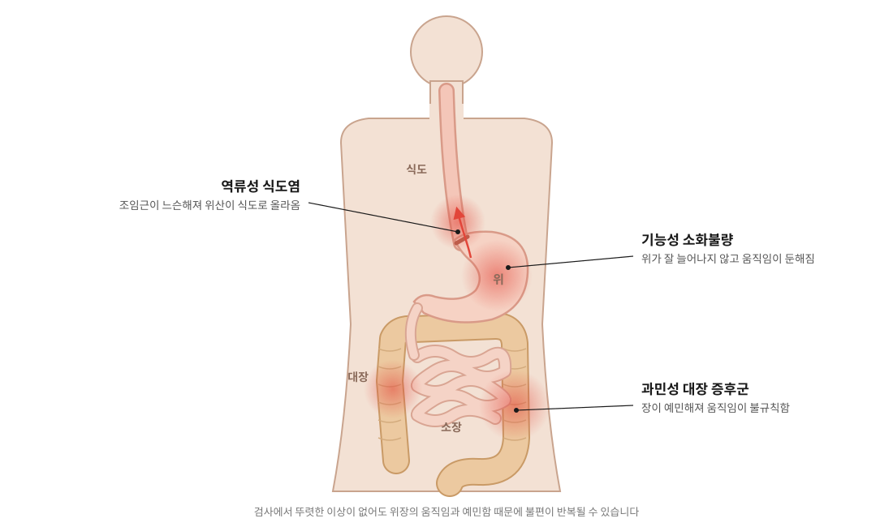

01
기능성 소화불량
내시경 등 검사에서 뚜렷한 이상이 없는데도 소화 불편이 반복되는 상태입니다. 위가 음식을 받아들일 때 잘 늘어나지 못하거나 장으로 내려보내는 움직임이 느려진 것과 관련이 있습니다.
이런 증상 · 식후 더부룩함, 조금만 먹어도 배부름, 명치 통증, 잦은 체기
홈 > 내과 질환 > 소화기 질환
검사는 괜찮다는데 계속 불편한 속, 원인부터 살핍니다
DIGESTIVE
먹은 음식은 식도를 지나 위에서 잘게 부서지고, 소장과 대장을 거치며 흡수되고 배출됩니다. 이 과정은 위가 알맞게 늘어나고 줄어드는 움직임과, 장이 일정한 리듬으로 음식을 내려보내는 힘에 달려 있습니다.
급하게 먹는 습관, 늦은 밤 식사, 스트레스와 수면 부족이 쌓이면 이 움직임이 둔해지거나 예민해집니다. 내시경에서 뚜렷한 이상이 없는데도 더부룩함, 속쓰림, 복통과 설사가 반복되는 이유입니다.
갈창림 한의원은 불편한 증상과 함께 식사·수면·스트레스 같은 생활 전체를 살펴 치료합니다.

CONDITIONS
01
내시경 등 검사에서 뚜렷한 이상이 없는데도 소화 불편이 반복되는 상태입니다. 위가 음식을 받아들일 때 잘 늘어나지 못하거나 장으로 내려보내는 움직임이 느려진 것과 관련이 있습니다.
이런 증상 · 식후 더부룩함, 조금만 먹어도 배부름, 명치 통증, 잦은 체기
02
식도와 위 사이의 조임근이 느슨해지거나 위 안의 압력이 높아져 위산이 식도로 올라오는 질환입니다. 과식과 늦은 밤 식사, 먹고 바로 눕는 습관이 흔한 원인입니다.
이런 증상 · 가슴 쓰림, 신물·쓴 물, 목 이물감, 마른기침
03
대장내시경에서 이상이 없는데도 복통과 함께 설사나 변비가 반복되는 질환입니다. 장이 작은 자극과 긴장에도 예민하게 반응합니다.
이런 증상 · 배변 후 나아지는 복통, 설사·변비, 가스·더부룩함
COMPARE
세 질환은 함께 나타나기도 하지만, 불편한 곳과 심해지는 때가 다릅니다.
| 기능성 소화불량 | 역류성 식도염 | 과민성 대장 증후군 | |
|---|---|---|---|
| 불편한 곳 | 명치, 윗배 | 가슴 안쪽, 목 | 아랫배, 배 전체 |
| 주된 느낌 | 더부룩함, 일찍 배부름, 체한 느낌 | 타는 듯한 쓰림, 신물 | 배가 아프다 화장실에 다녀오면 나아짐 |
| 심해지는 때 | 식후, 급하게 먹었을 때 | 과식한 뒤, 눕거나 허리를 숙일 때 | 긴장할 때, 특정 음식을 먹은 뒤 |
| 함께 오는 증상 | 트림, 메스꺼움, 입맛 저하 | 목 이물감, 헛기침, 쉰 목소리 | 설사·변비, 가스, 잔변감 |
※ 일반적인 경향이며 사람마다 다르게 나타날 수 있고, 두 가지 이상이 함께 있는 경우도 있습니다.
TREATMENT
위장의 움직임과 긴장을 돕는 치료와 함께 식사·수면 습관을 함께 바로잡습니다.
01 · 위장 기능
위장의 움직임과 긴장을 돕습니다
위장 기능과 관련된 자리와 굳은 복부·가슴·등 근육에 침을 놓아 위장의 움직임과 긴장을 돕습니다.
이런 분께 · 식후 더부룩하고 명치가 막힌 듯한 분
02 · 순환
차가워진 배를 따뜻하게 합니다
배와 아랫배에 따뜻한 자극을 주어 차고 예민해진 위장의 순환을 돕습니다.
이런 분께 · 배가 차고 찬 음식에 탈이 잘 나는 분
03 · 몸 안쪽 회복
원인에 맞춰 처방합니다
위장이 약하고 차가운지, 스트레스로 막혔는지, 식습관 때문인지, 설사형인지 변비형인지 등 원인과 몸 상태를 살펴 처방합니다.
이런 분께 · 증상이 오래되었거나 자주 반복되는 분
FLOW
증상과 함께 식사·수면·스트레스를 살핀 뒤 치료를 진행합니다.
※ 그날의 몸 상태에 따라 일부 치료는 달라질 수 있습니다.
SIDE EFFECTS
치료 후 나타날 수 있는 반응과 드물게 생길 수 있는 부작용입니다. 받으시는 치료에 맞춰 미리 설명해 드립니다.
침을 맞은 자리에 작은 멍이나 피가 맺히고 뻐근한 느낌이 남을 수 있으며, 대부분 며칠 안에 사라집니다.
긴장했거나 공복·피로한 상태에서는 어지럽거나 식은땀이 날 수 있습니다. 바로 누워 쉬면 대부분 회복되니, 이상하면 바로 말씀해 주세요.
뜨겁게 느껴지면 바로 말씀해 주세요. 드물게 물집이나 화상 자국이 생길 수 있습니다.
속쓰림, 묽은 변, 피부 가려움 같은 증상이 생길 수 있습니다. 이럴 때는 복용을 멈추고 연락해 주세요.
※ 부작용의 종류와 정도에는 개인차가 있습니다. 복용 중인 약이 있거나 임신·수유 중이라면 진료 전에 꼭 알려 주세요. 이상 반응이 있으면 바로 한의원(053-851-0122)으로 연락해 주세요.
CAUTION
아래와 같은 경우는 다른 질환이 숨어 있을 수 있어, 내시경 등 검사로 먼저 확인하는 것이 안전합니다.
CARE
※ 치료에 대한 반응과 회복 속도는 개인차가 있습니다.
FAQ
위장의 모양에는 이상이 없어도 움직임이 둔해지거나 예민해지면 불편이 반복될 수 있습니다. 기능성 소화불량과 과민성 대장 증후군이 대표적이며, 생활 습관과 스트레스를 함께 살펴 관리합니다.
네. 복용 중인 약을 알려 주시면 확인한 뒤 함께 관리합니다. 처방받은 약을 줄이거나 끊는 것은 처방한 의사와 상의해 주세요.
자주 체하고 명치가 막힌 듯한 느낌은 기능성 소화불량에서 흔한 증상입니다. 체하는 상황과 음식, 식사 습관을 함께 살펴 관리합니다.
사람에 따라 도움이 되기도 하지만, 오히려 가스가 늘어나는 경우도 있습니다. 드셔 보고 증상 변화를 살펴 주세요.
증상이 이어진 기간과 생활 습관에 따라 다릅니다. 진찰 후 예상 기간을 안내해 드리며, 결과에는 개인차가 있습니다.
TIME
작성·검토갈창림 대표원장 (한의사)최종 검토 2026년 10월 15일